Thank you for buying this record. What follows is its documentation: the
pressing identified, the matrix / runout transcribed by hand from the dead
wax, and the condition as assessed before it was listed. It is yours to keep
with the record.
— Paul, Vinyl Curator
Miles Davis
Sketches of Spain
2012 · Mobile Fidelity Sound Lab (licensed from Columbia/Sony Music) MFSL 1-375 · Stereo · US · LP · 33 1/3 RPM
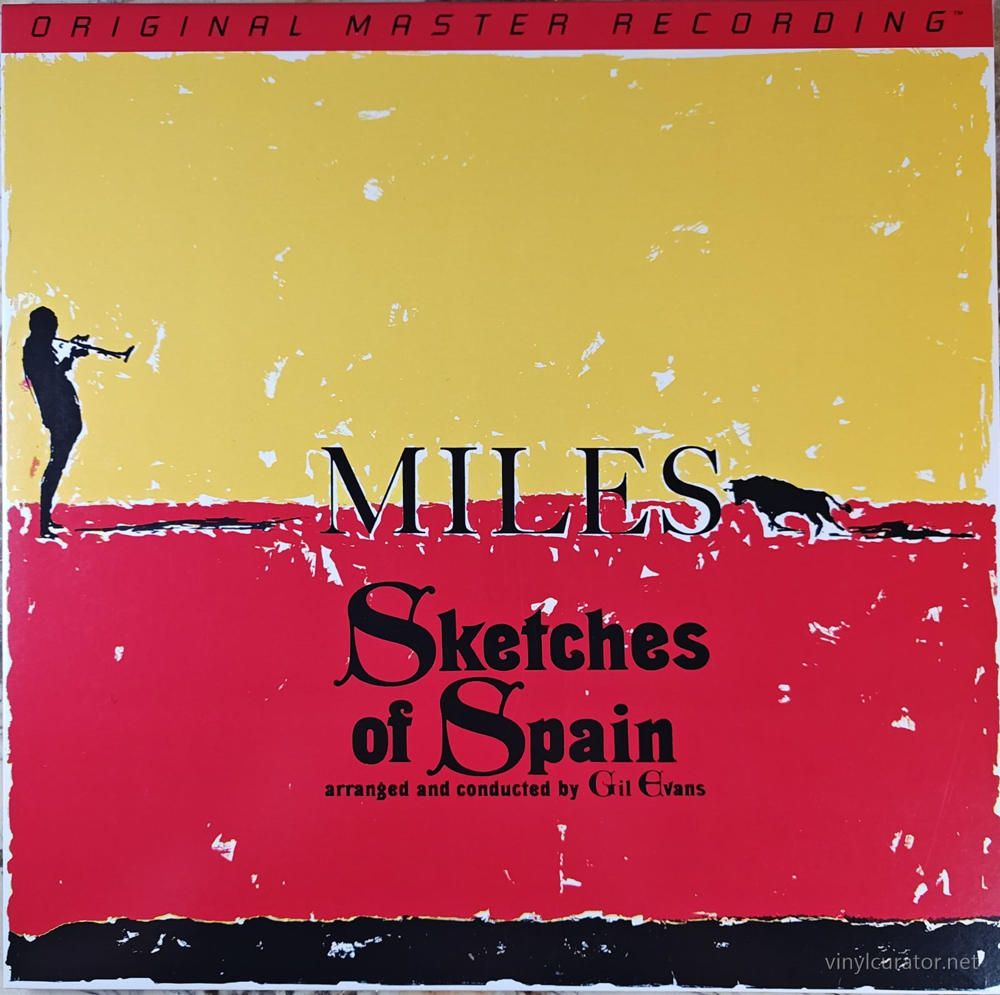
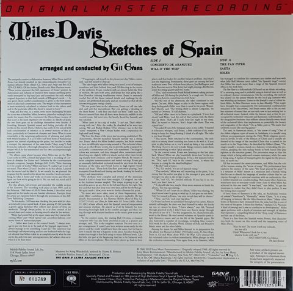
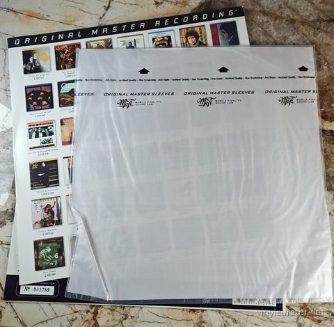
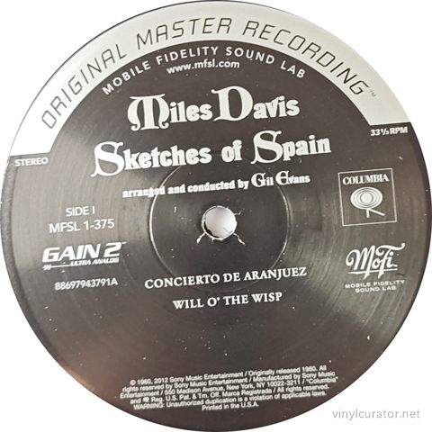
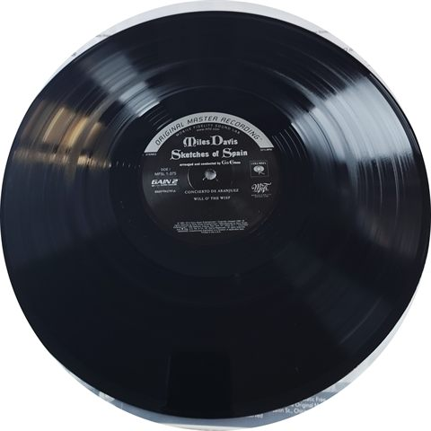
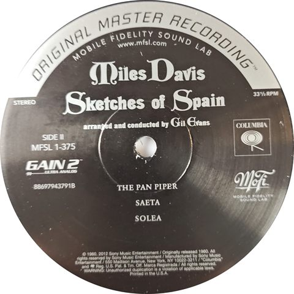
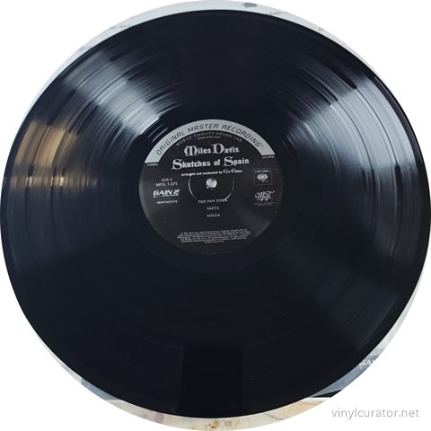
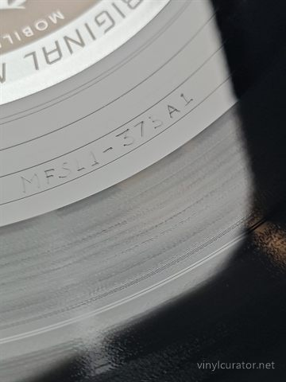
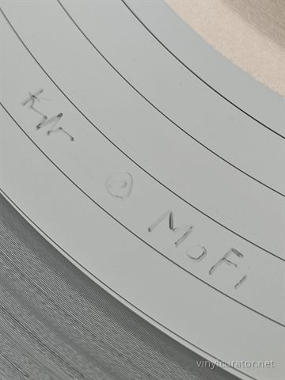
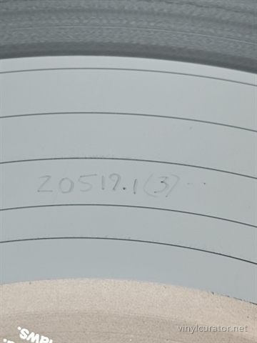
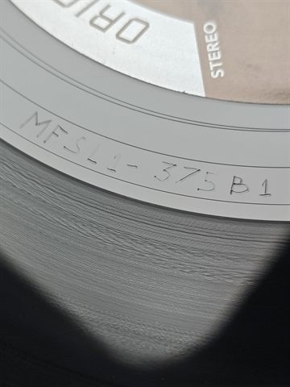
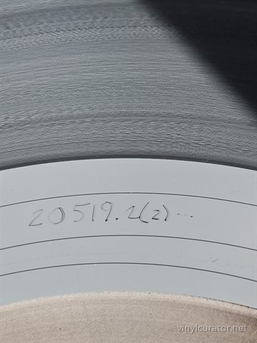
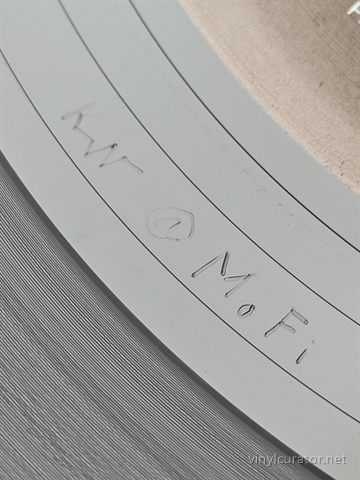
Pressing details
Label
Mobile Fidelity Sound Lab (licensed from Columbia/Sony Music)
Catalogue number
MFSL 1-375
Year
2012
Mono / Stereo
Stereo
Country
US
Format
LP
Speed
33 1/3 RPM
Genre
Jazz - Third Stream/Orchestral Jazz
Producer
Teo Macero (original); reissue produced by Mobile Fidelity Sound Lab
Conductor
Gil Evans
Performer / Orchestra
Gil Evans Orchestra
Musicians
Miles Davis (trumpet, flugelhorn), Gil Evans (arranger, conductor), Ernie Royal, Bernie Glow, Taft Jordan, Louis Mucci (trumpets), Jimmy Buffington, Earl Chapin, Tony Miranda (French horn), Bill Barber (tuba), Romeo Penque, Eddie Caine, Albert Block (woodwinds), Jack Twyman, Danny Bank (woodwinds/bass clarinet), Elvin Jones (drums, percussion), Jose Mangual, Rudy Collins, Jimmy Cobb (drums/percussion on various tracks), Paul Chambers (bass)
Side A: MFSL1-375A1 KW@MOFI 20519.1 (3)
Side B: MFSL1-375B1 KW@MOFI 20519.2 (2)
Condition
Cover
NM
Vinyl
NM
Variant chronology
1960 - US Columbia CS 8271, 6-eye stereo label, first pressing
1960s-70s - Columbia 2-eye/360 Sound reissues
2012 - Mobile Fidelity Sound Lab MFSL 1-375, numbered limited edition, 180g, GAIN 2 Ultra Analog, pressed at RTI <- this copy
2022 - Mobile Fidelity UltraDisc One-Step box set, MFSL UD1S
This Pressing
2012 Mobile Fidelity numbered limited edition reissue (MFSL 1-375) - not an original Columbia pressing, mastered from analog tapes by Krieg Wunderlich/Shawn Britton on the GAIN 2 Ultra Analog System.
The Album
Sketches of Spain (1960) was the third of Miles Davis's landmark orchestral collaborations with arranger Gil Evans, following Miles Ahead and Porgy and Bess, and it pushed their partnership furthest into a hybrid of jazz improvisation and Spanish/flamenco classical idiom. The album's centerpiece, an adaptation of the adagio from Joaquín Rodrigo's 'Concierto de Aranjuez,' was reportedly brought to Davis's attention on a trip and became the emotional core of the record, with Evans scoring lush, cinematic orchestrations around Davis's spare, vocal-like trumpet lines. Recorded across sessions in late 1959 and spring 1960 with a large ensemble of woodwinds, brass, and percussion rather than a conventional jazz combo, the album found Davis playing more as a soloist within an orchestral tone poem than as a bandleader trading choruses, a striking departure that some critics found beautiful and others found overly composed and lacking spontaneous swing. It arrived at a pivotal moment in Davis's career, sandwiched between the modal breakthroughs of Kind of Blue and his later 1960s quintet work, and it cemented Evans and Davis as one of the most important composer-soloist pairings in jazz history. The record's fusion of European classical form, Spanish folk color, and jazz phrasing was hugely influential on the 'third stream' movement and on later exoticist and orchestral jazz projects. It remains one of the most acclaimed and frequently cited albums in both Davis's and Evans's discographies, praised for its haunting atmosphere and orchestral ambition even by listeners who prize Davis's small-group work above all else.
Mastered by Krieg Wunderlich (assisted by Shawn Britton) at Mobile Fidelity Sound Lab, Sebastopol, CA, using the proprietary GAIN 2 Ultra Analog System cut from the analog master tapes, and pressed on 180g vinyl at RTI. Collectors on forums.stevehoffman.tv generally rate this MoFi cut favorably for its quieter surfaces and expanded soundstage compared to standard Columbia reissues, though some purists still prefer the tonal warmth of the original 6-eye Columbia pressing. Within the album's overall fidelity hierarchy this standard MFSL 180g LP sits above generic Columbia reissues and mid-tier CD/digital transfers, but below both a clean original 1960 6-eye Columbia stereo pressing (prized for its vintage analog character) and MoFi's own later, more expensive UltraDisc One-Step box set, which uses a one-step lacquer-to-stamper process for even lower noise and higher resolution.
I do this work for other people’s collections too — documenting a
collection record by record, researching individual pressings, and preparing
collections for sale or for insurance. If you have a collection you would like
documented, or a record you want identified properly, get in touch:
email
This record’s page: https://vinylcurator.net/albums/miles-davis-sketches-of-spain-mobile-fidelity/